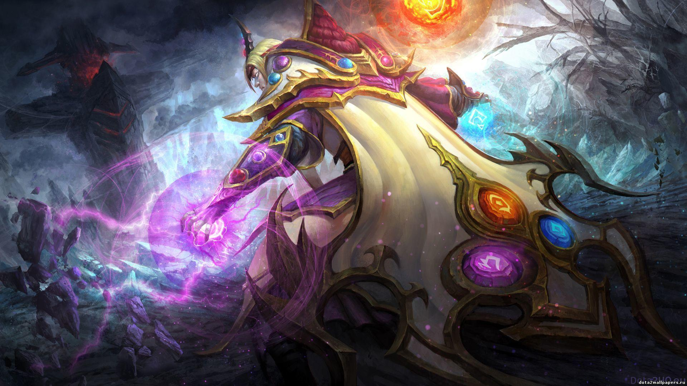

HTML/CSS WEBSITE MADE BY MARTIN (MIO) LUNA

HTML/CSS WEBSITE MADE BY MARTIN (MIO) LUNA
INVOKER

In its earliest, and some would say most potent form, magic was primarily the art of memory. It required no technology,
no wands or appurtenances other than the mind of the magician. All the trappings of ritual were merely mnemonic devices,
meant to allow the practitioner to recall in rich detail the specific mental formulae that unlocked a spell's power.
The greatest mages in those days were the ones blessed with the greatest memories, and yet so complex were the
invocations that all wizards were forced to specialize. The most devoted might hope in a lifetime to have adequate
recollection of three spells—four at most. Ordinary wizards were content to know two, and it was not uncommon for a
village mage to know only one—with even that requiring him to consult grimoires as an aid against forgetfulness on the
rare occasions when he might be called to use it.
But among these early practitioners there was one exception, a genius of vast intellect and prodigious memory who came
to be known as the Invoker. In his youth, the precocious wizard mastered not four, not five, not even seven
incantations: He could command no fewer than ten spells, and cast them instantly. Many more he learned but found
useless, and would practice once then purge from his mind forever, to make room for more practical invocations. One such
spell was the Sempiternal Cantrap—a longevity spell of such power that those who cast it in the world's first days are
among us still (unless they have been crushed to atoms).
Most of these quasi-immortals live quietly, afraid to admit their secret: But Invoker is not one to keep his gifts
hidden. He is ancient, learned beyond all others, and his mind somehow still has space to contain an immense sense of
his own worth...as well as the Invocations with which he amuses himself through the long slow twilight of the world's
dying days.
Carl, the Invoker, is a ranged intelligence hero who is very difficult to master. He is unique in that he possesses a
total of 14 abilities in his arsenal; three of them - Quas, Wex, and Exort - are reagents and one is his special
ultimate Invoke. The three abilities he learns throughout leveling up can have three instances, which serve as the basic
ingredients or components for him to create a new ability using his ultimate. Once the reagents or elements are
combined, he can invoke one out of ten different abilities. All of his invoked abilities are capable of a multitude of
actions, from damaging enemies to aiding his allies, and even saving himself from danger. His three reagents can be
upgraded up to level 7 which determines the power and potency of his invoked abilities, making it more powerful than an
ordinary spell. Because of this, he can be played in almost any role possible. Invoker can be a carry, semi-carry,
ganker, pusher, initiator or even support. His three reagents provide a passive bonus per instance, allowing for
specialization at early levels and situational boosts at later levels. His extremely flexible nature allows him to use
many different combinations of items effectively but also make him dependent on solid builds and a good gold advantage.